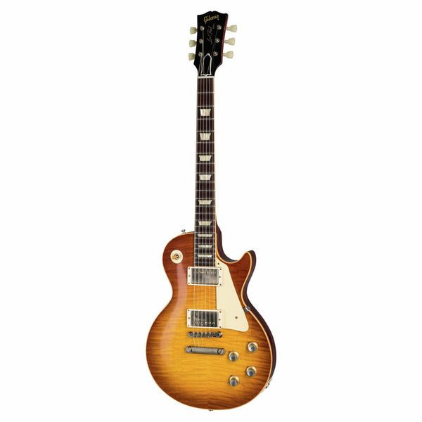
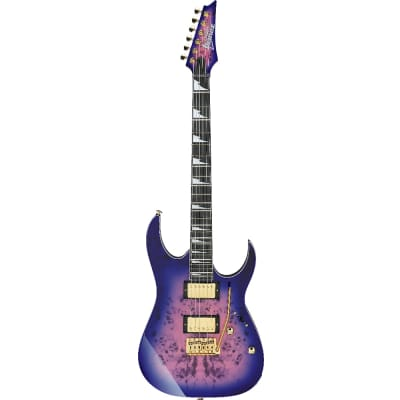
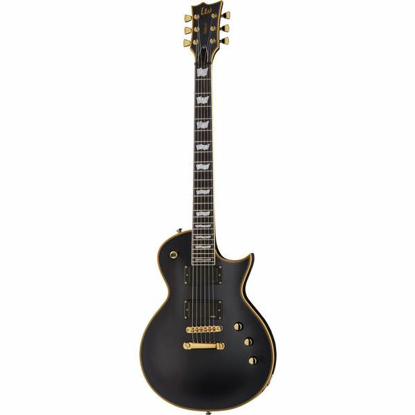

Sviranje gitare postalo je više od hobija za mene - postalo je strast, način izražavanja i način da se izrazim kroz glazbu. Već pet godina sviram gitaru i želio bih podijeliti svoje iskustvo, opisati svoje gitare i sanjati o budućim.
Prije pet godina, kada sam prvi put uzeo gitaru u ruke, nisam imao pojma kako svirati niti kakav je to svijet. Odlučio sam krenuti s nečim pristupačnim i dobio sam svoju prvu gitaru - Yamaha Pacifica PAO12 BL II. Ova gitara je odličan izbor za početnike i imala je odličan zvuk, što mi je olakšalo učenje osnova sviranja.
Nakon što sam stekao osnovne vještine sviranja na akustičnoj gitari, odlučio sam preći na električnu. Moja druga gitara bila je Ibanez GRG170DX. Ibanez je poznat po svojoj kvaliteti i ergonomiji, a ova gitara je pružila sasvim drugačiji zvuk od prošle gitare. Obožavao sam njezinu brzinu i sposobnost da izvuče različite tonove.
S vremenom sam razvijao svoj stil sviranja, a inspiraciju sam pronašao u rock glazbi. Sanjao sam o gitari koja bi mi omogućila sviranje s pravim rock osjećajem. I tada je došao red na moju Epiphone Les Paul Special II. Ova gitara je napravljena prema specifikacijama legendarnog gitarista Slasha i ima odličan rock zvuk. Svaki akord i solo zvuče posebno dobro na njoj.
Unatoč zadovoljstvu koje su mi donijele moje trenutne gitare, sanjam o budućim instrumentima koje bih volio posjedovati. Evo nekoliko gitara koje su na mom popisu želja:
Gibson Les Paul
je legendarna električna gitara koju je prvi put predstavila kompanija Gibson 1952. godine. Ova gitara je poznata po svojem prepoznatljivom obliku sa masivnim tijelom i dvama humbucker pickup-ima koji omogućavaju snažan i bogat zvuk. Les Paul je postao ikona rock glazbe i korišten je od strane mnogih poznatih gitarista, uključujući Jimmy Page-a, Slash-a i Eric Claptona. Gibson Les Paul je dostupan u različitim modelima i finišima, te se smatra jednom od najprepoznatljivijih i cijenjenih gitara na svijetu.
Ibanez GRG220PA GIO
je električna gitara iz serije GIO, koju proizvodi Ibanez, poznata po svojoj pristupačnoj cijeni i solidnom kvalitetu. Ovaj model ima tijelo od paulownia drveta koje je lagano i udobno za sviranje. Gitara je opremljena s dva humbucker pickup-a, što omogućava snažan i raznolik zvuk pogodan za rock i metal glazbu. GRG220PA dolazi s tremolo mostom za dodatnu izražajnost u sviranju. Ova gitara nudi odličan omjer cijene i kvaliteta te je popularan izbor među gitaristima koji traže pristupačan instrument s dobrim performansama.
ESP EC 1000
je popularna električna gitara koju proizvodi japanski proizvođač ESP. Ovaj model pripada seriji Eclipse, poznatoj po svojem klasičnom dizajnu "single-cutaway" tijela. EC-1000 je napravljen od mahagonija za tijelo i vrat, što pruža bogat i dubok ton. Opremljen je aktivnim EMG humbucker pickup-ima, koji omogućavaju snažan i čist zvuk pogodan za različite žanrove, posebno za rock i metal glazbu. Gitara ima kvalitetnu izradu i premium komponente kao što su Grover štimeri i TonePros most, što je čini pouzdanim i izdržljivim instrumentom. ESP EC-1000 je popularan izbor među gitaristima koji traže visoku kvalitetu i izvanredne tonalne karakteristike.
Svaka gitara ima svoj jedinstveni karakter i zvuk, što čini sviranje još uzbudljivijim.
Za sve one koji tek počinju svoj put sviranja gitare, imam nekoliko savjeta:
Sviranje gitare je ispunjavajuće iskustvo koje nikada ne prestaje razvijati se. Svaka gitara koju posjedujete i svaki akord koji svirate doprinose vašem glazbenom putovanju. Uz malo truda i ljubavi prema glazbi, možete stvoriti prekrasnu glazbu i uživati u sviranju gitare tijekom cijelog života.
Svirajte s ljubavlju i strašću!